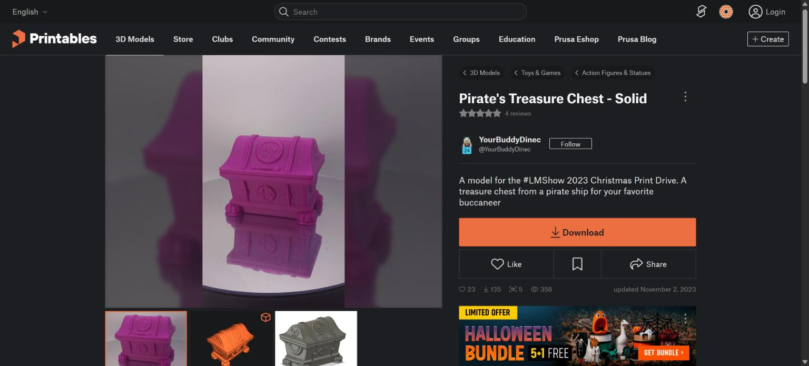
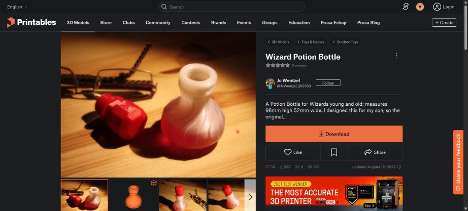
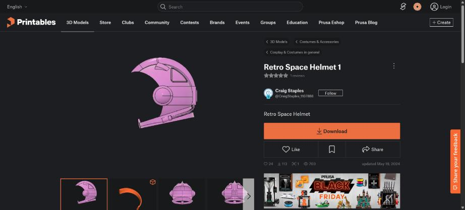
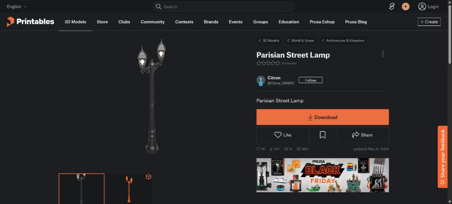
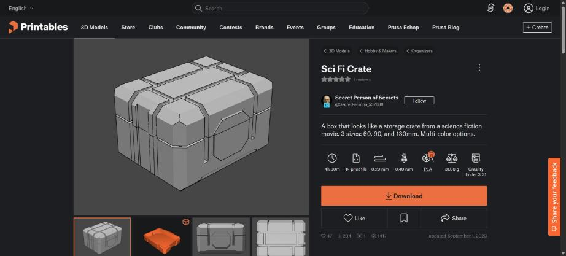
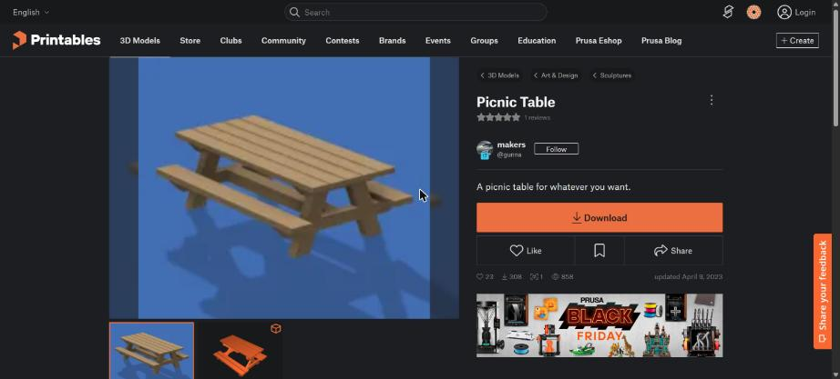
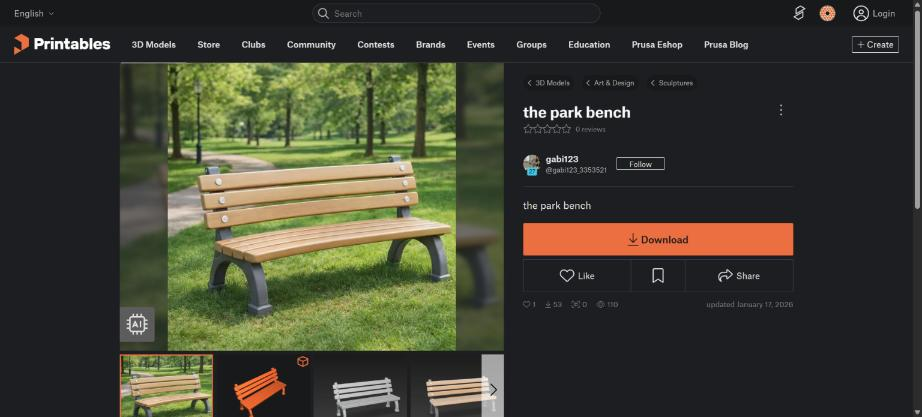
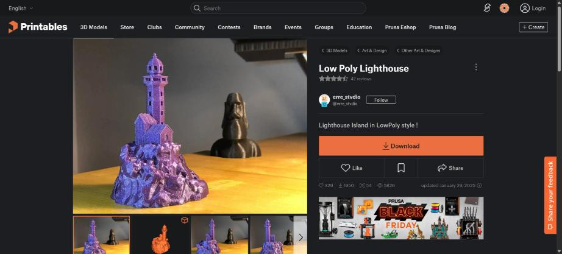
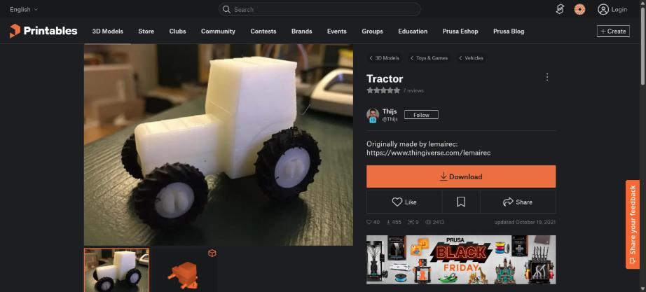
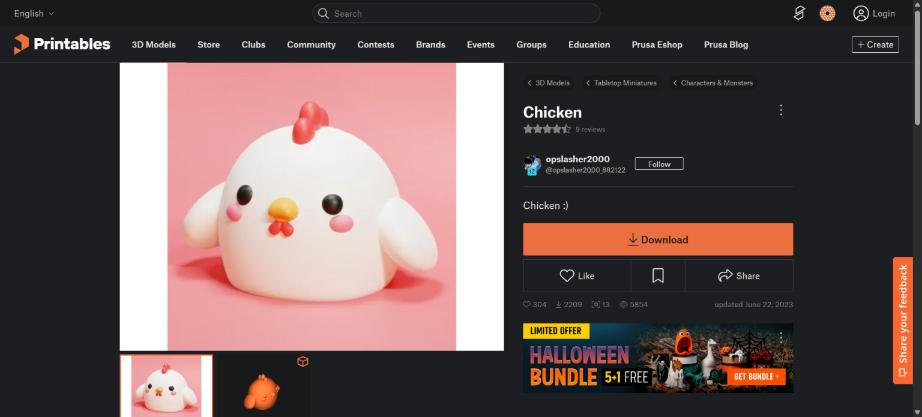

STL pilot: 10 Printables models, cleaned
Every model is CC0 or CC BY and carries its author, licence and source link in its own provenance.json. Left: the Printables source image. Right: our cleaned GLB (repair, decimate, UV, normal + AO bake, role-named materials).
Pirate's Treasure Chest - Solid

CC BY 4.0 · by YourBuddyDinec · model page · provenance.json · licence screenshot
author's original creation

74,246 → 896 triangles in 4s
| stage | time | tris after |
|---|---|---|
| import | 0.0s | 74,246 |
| repair | 0.3s | 73,262 |
| assemble scale pivot | 0.0s | 73,262 |
| decimate | 0.4s | 896 |
| uv | 0.7s | 896 |
| bake | 0.9s | 896 |
| material | 0.0s | 896 |
| export | 0.3s | 896 |
Wizard Potion Bottle

CC BY 4.0 · by Jc Wentzel · model page · provenance.json · licence screenshot
author's original creation (imported from Thingiverse by the author)

208,680 → 698 triangles in 7s
| stage | time | tris after |
|---|---|---|
| import | 0.0s | 208,680 |
| repair | 0.7s | 208,666 |
| assemble scale pivot | 0.0s | 208,666 |
| decimate | 1.8s | 698 |
| uv | 1.7s | 698 |
| bake | 0.7s | 698 |
| material | 0.0s | 698 |
| export | 0.3s | 698 |
Retro Space Helmet 1

CC0 1.0 · by Craig Staples · model page · provenance.json · licence screenshot
author's original creation

58,236 → 1,726 triangles in 6s
| stage | time | tris after |
|---|---|---|
| import | 0.0s | 58,236 |
| repair | 0.1s | 58,220 |
| assemble scale pivot | 0.0s | 58,220 |
| decimate | 0.5s | 1,726 |
| uv | 2.8s | 1,726 |
| bake | 0.5s | 1,726 |
| material | 0.0s | 1,726 |
| export | 0.3s | 1,726 |
Parisian Street Lamp

CC0 1.0 · by Citron · model page · provenance.json · licence screenshot
author's original creation

224,990 → 1,493 triangles in 6s
| stage | time | tris after |
|---|---|---|
| import | 0.0s | 224,990 |
| repair | 0.6s | 224,990 |
| assemble scale pivot | 0.0s | 224,990 |
| decimate | 2.0s | 1,493 |
| uv | 1.4s | 1,493 |
| bake | 0.6s | 1,493 |
| material | 0.0s | 1,493 |
| export | 0.3s | 1,493 |
Sci Fi Crate (90mm Single Color: bottom and top)

CC BY 4.0 · by Secret Person of Secrets · model page · provenance.json · licence screenshot
author's original creation

4,980 → 1,458 triangles in 5s
| stage | time | tris after |
|---|---|---|
| import | 0.0s | 4,980 |
| repair | 0.0s | 4,990 |
| assemble scale pivot | 0.0s | 4,990 |
| decimate | 0.0s | 1,460 |
| uv | 2.0s | 1,458 |
| bake | 0.8s | 1,458 |
| material | 0.0s | 1,458 |
| export | 0.4s | 1,458 |
Picnic Table

CC0 1.0 · by makers (gunna) · model page · provenance.json · licence screenshot
author's original creation

490 → 490 triangles in 3s
| stage | time | tris after |
|---|---|---|
| import | 0.0s | 490 |
| repair | 0.0s | 490 |
| assemble scale pivot | 0.0s | 490 |
| decimate | 0.0s | 490 |
| uv | 1.1s | 490 |
| bake | 0.5s | 490 |
| material | 0.0s | 490 |
| export | 0.3s | 490 |
the park bench

CC0 1.0 · by gabi123 · model page · provenance.json · licence screenshot
author's original creation; page marks the preview image as AI-generated

1,499,696 → 3,000 triangles in 96s
| stage | time | tris after |
|---|---|---|
| import | 0.3s | 1,499,696 |
| repair | 74.0s | 999,735 |
| assemble scale pivot | 0.0s | 999,735 |
| decimate | 18.6s | 3,000 |
| uv | 0.1s | 3,000 |
| bake | 1.0s | 3,000 |
| material | 0.0s | 3,000 |
| export | 0.5s | 3,000 |
Low Poly Lighthouse

CC BY 4.0 · by erre_stvdio · model page · provenance.json · licence screenshot
author's original creation (imported from Thingiverse by the author)

5,128 → 5,000 triangles in 3s
| stage | time | tris after |
|---|---|---|
| import | 0.0s | 5,128 |
| repair | 0.0s | 5,128 |
| assemble scale pivot | 0.0s | 5,128 |
| decimate | 0.0s | 5,000 |
| uv | 0.9s | 5,000 |
| bake | 0.3s | 5,000 |
| material | 0.0s | 5,000 |
| export | 0.3s | 5,000 |
Tractor (base body + complete wheels)

CC BY 4.0 · by Thijs · model page · provenance.json · licence screenshot
remix of 'Tractor' by lemairec (thingiverse.com/lemairec); credit both

20,830 → 5,996 triangles in 3s
| stage | time | tris after |
|---|---|---|
| import | 0.0s | 20,830 |
| repair | 0.0s | 20,714 |
| assemble scale pivot | 0.0s | 20,714 |
| decimate | 0.1s | 5,997 |
| uv | 1.0s | 5,996 |
| bake | 0.3s | 5,996 |
| material | 0.0s | 5,996 |
| export | 0.4s | 5,996 |
Chicken

CC BY 4.0 · by opslasher2000 (re-upload) · model page · provenance.json · licence screenshot
re-upload of 'Chicken' by Infalivia (thingiverse.com), CC BY; credit Infalivia as original author

1,110,016 → 8,000 triangles in 27s
| stage | time | tris after |
|---|---|---|
| import | 0.2s | 1,110,016 |
| repair | 3.4s | 1,110,016 |
| assemble scale pivot | 0.0s | 1,110,016 |
| decimate | 18.7s | 8,000 |
| uv | 1.1s | 8,000 |
| bake | 1.4s | 8,000 |
| material | 0.0s | 8,000 |
| export | 0.7s | 8,000 |